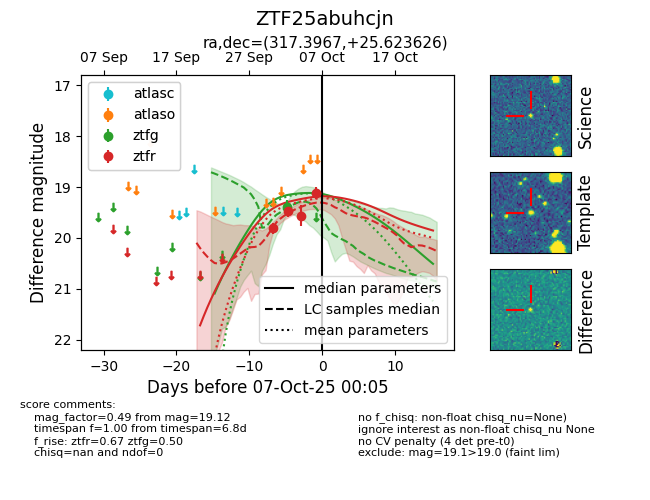
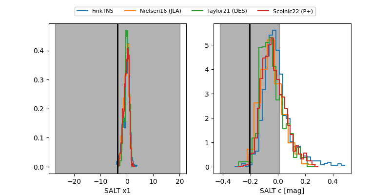

FINK: ZTF25abuhcjn
Lasair: ZTF25abuhcjn
ALeRCE: ZTF25abuhcjn
ZTF25abuhcjn (ztf,fink)
equatorial (ra, dec) = (317.3967,+25.62363)
galactic (l, b) = (72.6928,-14.93687)


last ztfg=19.39, ztfr=19.12
1 ztfg, 4 ztfr detections